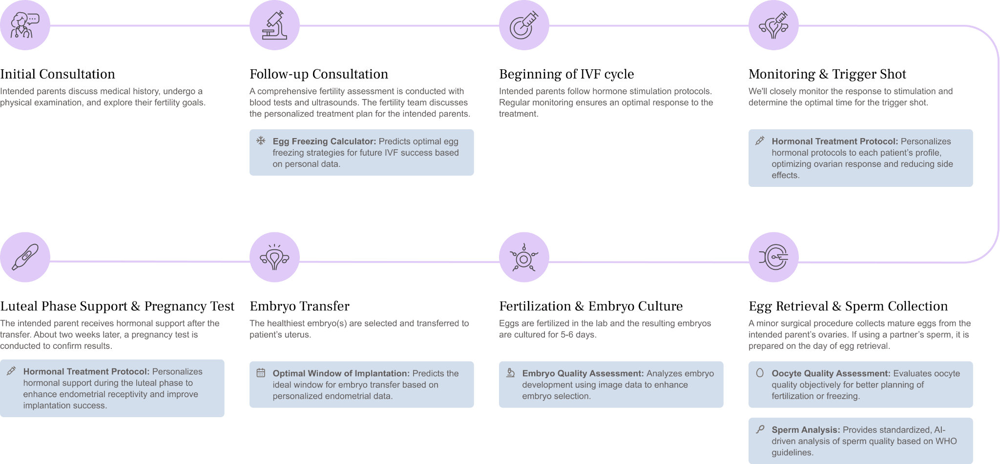
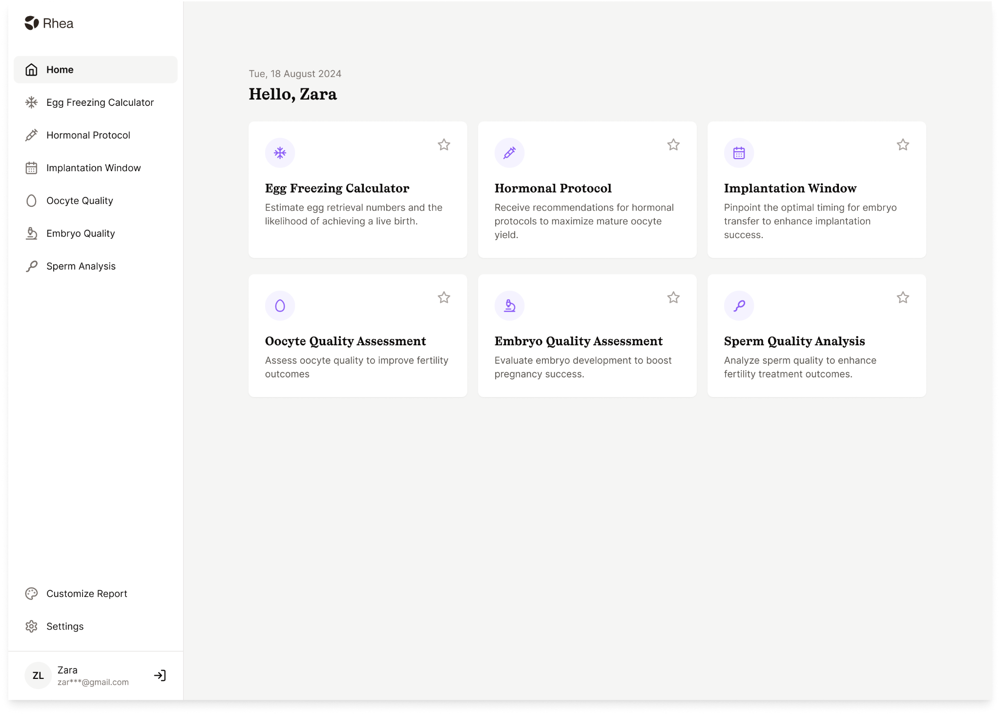
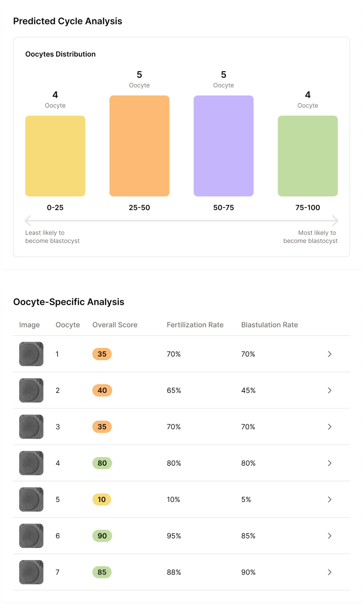

What the embryologist sees on Day 5


p_implantation, with per-embryo confidence bands and the age-conditioned cycle live-birth probability. Designed for the Day-5 transfer-decision huddle.The four numbers on every embryo card
Three ways Bonna changes your Day 5
Images auto-score as they arrive. By the time you walk in on Day 5, every embryo has a calibrated implantation probability with confidence, so you can spend your bench time on the borderline cases — the ones where you add the most value.
For fair-quality blastocysts, where Fleiss’ κ among embryologists drops to 0.25, Bonna is a stable second opinion. Agreement with you is reassuring. Disagreement is a signal to look again — and often a signal that the model sees something subtle you can confirm or refute.
The cycle live-birth number, conditioned on maternal age and the actual cohort of embryos, supports a more realistic conversation about expected outcome per cycle and whether to transfer fresh, freeze-all, or proceed to PGT-A.
Published peer-reviewed validation
Rhea Labs · the AI engine inside GenPrime clinics
Rhea Labs builds the clinical AI behind Rhea and the GenPrime fertility network. Bonna, the oocyte-quality model, the personalized fertility calculator, and the stimulation-protocol work are all developed, validated, and deployed by the same team — and they run inside the clinics your patients walk into.